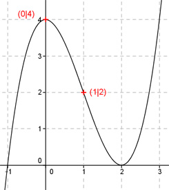

Aufgabe 17 Der Graph einer ganzrationalen Funktion 3. Grades hat in (0|4) einen Hochpunkt und in (1|2) einen Wendepunkt. Wie lautet seine Funktionsgleichung?  Allgemeine Form einer ganzrationalen Funktion 3. Grades: f(x) = ax3 + bx2 + cx + d f’(x) = 3ax2 + 2bx + c f’’(x) = 6ax + 2b 4 Bedingungen: 1. Hat in (0|4) einen Hochpunkt bedeutet zum einen: f(0) = 4 --> a * 03 + b * 02 + c * 0 + d = 4 --> d = 4 2. Hat in (0|4) einen Hochpunkt bedeutet zum anderen: f’(0) = 0 --> 3a * 02 + 2b * 0 + c = 0 --> c = 0 3. Hat in (1|2) einen Wendepunkt bedeutet zum einen: (c = 0 und d = 4 eingesetzt) f(1) = 2 --> a * 13 + b * 12 + 4 --> a + b + 4 = 2 |-2 a + b = -2 I 4. Hat in (1|2) einen Wendepunkt bedeutet zum anderen: f’’(1) = 0 --> 6a * 1 + 2b = 0 --> 6a + 2b = 0 II I * (-2) + II -2a - 2b = 4 6a + 2b = 0 ------------- 4a = 4 |:4 a = 1 a = 1 in I eingesetzt: 1 + b + 4 = 2 |-5 b = -3 Gesuchte Funktionsgleichung: f(x) = x3 - 3x2 + 4